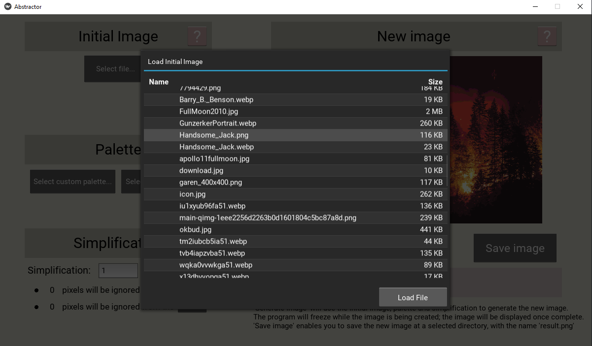

Abstractor
Abstractor was an image manipulation program that I created for my year 12 SDD major project. In year 9 I had developed code to manipulate an image, according to a given 'simplication' (both sides are divided by this value). It worked quite well, except all that it truly achieved has descaling an image. I then added palette conversion and implemented the palette into the code. For every section of pixels, it will allocate every pixel (from the palette) a score according to how close it's RGB values are. It will then determine the lowest score (which means that the pixel most closely resembles the original colour), and place the new pixel. It was a bit clunky, selecting files in a terminal interface, and so I figured that a GUI would spice it up. In year 12 SDD I figured that it would be fun and useful to do, so I took it on headfirst. After using tkinter, pygame and kivy, I choose the latter. I appreciated it's simplicity.
 Despite a multitude of hurdles, including confusing kivy syntax and complicated resizing functions, I managed to make it work. The gif on the left is an example of this, having morphed (with a different program) the original image and the new, pixel art image.
Despite a multitude of hurdles, including confusing kivy syntax and complicated resizing functions, I managed to make it work. The gif on the left is an example of this, having morphed (with a different program) the original image and the new, pixel art image.
Files are selected with an easy-to-use pop-up interface. This interface is used to load palettes, load the 'initial image', and save the 'new image'. Included with the program is 7 default palettes, 4 of which cover a wide variety of colours. The program determines it's own path and can then access them.
 Completing a useful, GUI based python project was very satisfying. I've used it numerous times now, and am still amazed by it's elegance.
Completing a useful, GUI based python project was very satisfying. I've used it numerous times now, and am still amazed by it's elegance.


The functionality of the program can be seen above, with a careful walkthrough of selecting an image, selecting a palette, selecting a simplification, creating the new image, and saving the image.